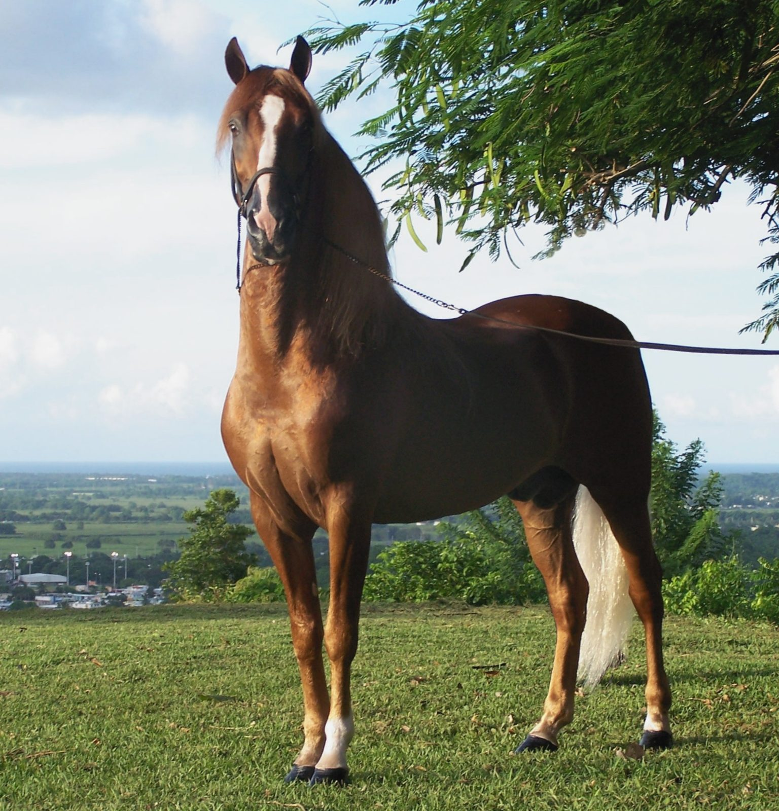

How it began
- Since
- 2001
- Stable
- 32 Dolphin Lane, Long Bay Hills
- Herd
- 28 horses and ponies
Provo Ponies began as a rescue, not a business. Camille Slattery and a few friends bought seven Paso Finos that had been shipped to Provo from the Dominican Republic and left hungry, thirsty and without shade. Once they were healthy they were far too young to retire, so they went to work, and the rides began. On an island with no grass, every bale of hay is imported, and the team trims every hoof themselves: there is no farrier and no horse vet in the country.
Team
- Camille Slattery, ownersince 2001
- Caroline Lundgren, manageron Provo since 2012
- Andrea, guide and teacherjoined 2025
- Deron, guideborn on the island
- Lessons for local childrenSaturdays
- Mounted games and bareback daysthrough the year
- Natural horsemanship clinicsnow and then
- The students' horse showevery year
